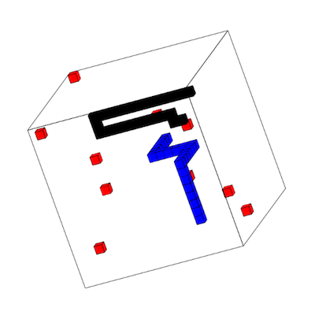
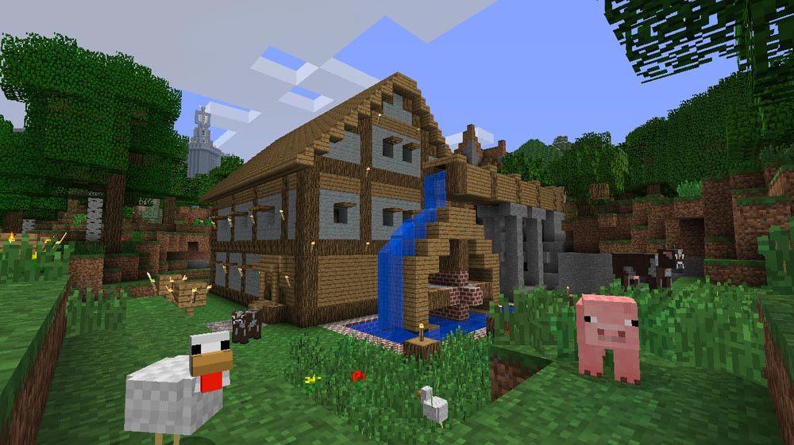

Clojurescript + Three.js
@henrygarner
Dojo #1 - Multisnake
Dave Snowdon, Nikita Beloglazov
https://github.com/davesnowdon/multisnake

Torus Pong
A Clojure Cup 2013 contribution by:
Jon Neale, Paul Lam, Thomas Kristensen, Ragnar Dahlen
Dojo #2 - THREE.js
Massive Multiplayer Online 3D Snake
Demo
Network: SMEX4
- Snake: arrow keys
- View: a, s, d
State machine
Multi-client
Game Tick
(go
(loop [game-state game-core/initial-game-state
commands []
timer (timeout (long params/tick-ms))]
(let [[v c] (alts! [timer command-chan] :priority true)]
(condp = c
command-chan (when v
(recur game-state (conj commands v) timer))
timer (let [updated-game-state
(game-core/advance game-state commands)]
(>! game-state-channel updated-game-state)
(recur updated-game-state
[]
(timeout (long params/tick-ms))))))))
On the client
;; All clients receive (almost) the same game state
{:player-id 4
:snakes [{:body ([19 9 15] [19 8 15] [19 7 15])
:dir [0 1 0]
:id 4
:orientation 1}]
:apples #{[14 14 6] [7 18 19] [2 4 17] [19 15 17]}}
(go (loop [previous-arena (make-arena quaternion)]
(let [game-state (<! c)
new-arena (make-arena quaternion)]
(.remove scene previous-arena)
(draw-game-state new-arena game-state)
(.add scene new-arena)
(recur new-arena))))
Minecraft - Voxels
Three.js components
- Scene
- Mesh
- Camera
- Renderer (WebGL or Canvas)
Three.js components
(let [scene (THREE/Scene.)
geometry (THREE/CubeGeometry. 10 10 10)
material (THREE/MeshBasicMaterial.
(clj->js {:wireframe true :color 0x000000}))]
(.add scene (THREE/Mesh. geometry material)))
;; Frustrum left, right, top, bottom, near and far planes
(let [scene (THREE/Scene.)
camera (THREE/OrthographicCamera. (/ width -2) (/ width 2)
(/ height 2) (/ height -2)
1 1000)]
(.add scene camera))
;; Three.js can render using WebGL or 2D Canvas API
(let [renderer (if (.WebGLRenderingContext js/window)
(THREE/WebGLRenderer.)
(THREE/CanvasRenderer.))]
(.render renderer scene camera))
Fez - Trixels

Orthographic Camera
Foreign Libs
;; Inside project.clj
:foreign-libs [{:file "resources/public/three.max.js"
:provides ["three"]}
{:file "resources/public/tween.max.js"
:provides ["tween"]}]
;; Inside cljs source
(ns multiplay.views.arena
(:require [three]
[tween]))
Advanced mode
;; Inside project.clj
:optimizations :advanced
:externs ["resources/public/three.extern.js"
"resources/public/tween.extern.js"]
# lein cljsbuild
com.google.javascript.jscomp.LoggerErrorManager printSummary
WARNING: 0 error(s), 19,434 warning(s)
- 2.0MB raw
- 650K pruned
- 130K pruned + gzipped
Thank You
https://github.com/henrygarner/multisnake
https://github.com/henrygarner/ldnclj-talk-nov-2013

@henrygarner
CTO, Likely